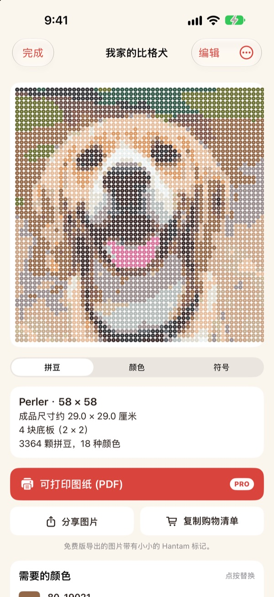
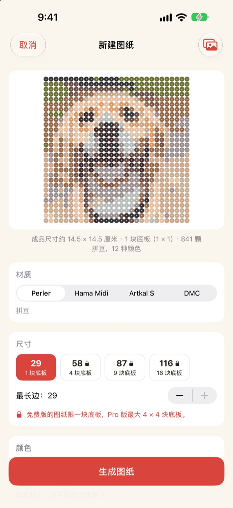
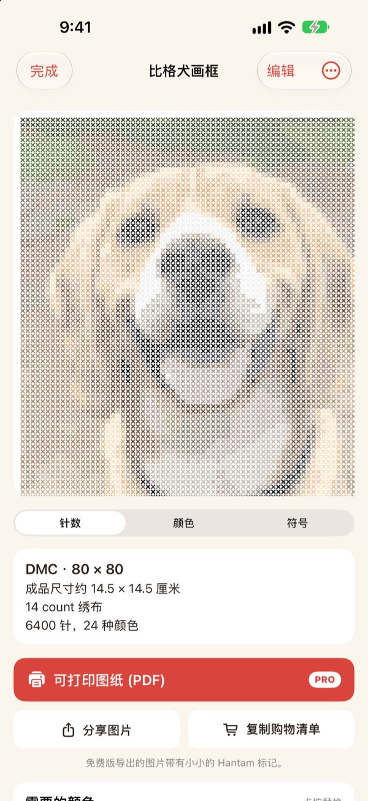
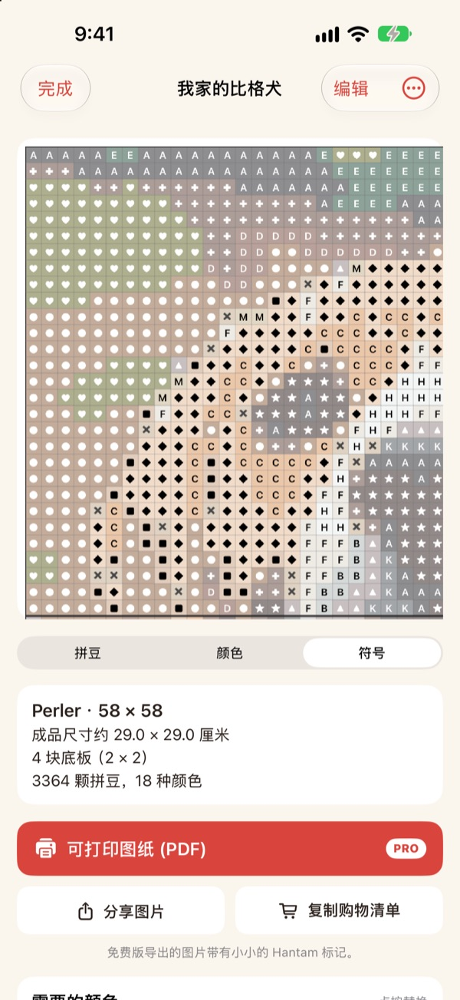
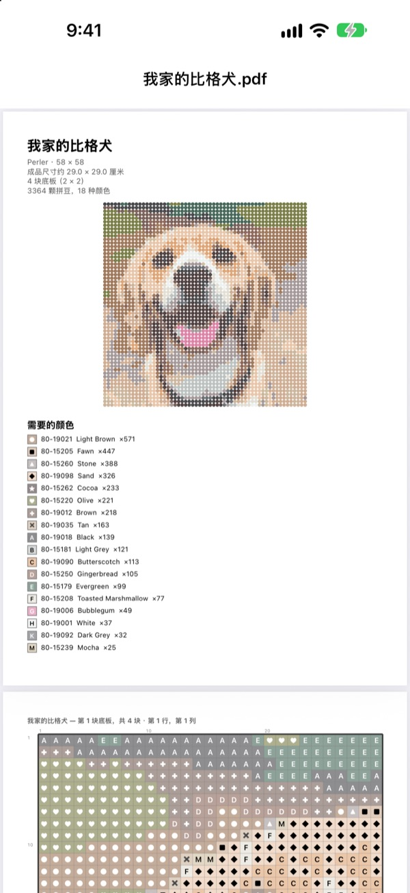

一张照片
就是一份图纸
选一张宠物、自己或喜欢的角色的照片。Hantam 会用真正买得到的颜色，把它变成拼豆或十字绣图纸。
一块拼板以内的图纸免费。照片不会离开你的 iPhone。

用照片试一试
和 App 用的是同一种配色方法，颜色来自真实的 Perler 色卡。可以改尺寸和颜色数，也可以换成你自己的照片。
做图纸不难，难的是对上真实的豆子颜色
用普通修图 App 把照片像素化，出来的颜色往往没有哪种豆子或绣线能对上。你得猜每一格该用哪罐豆子，再一种一种数要买多少。Hantam 只从真实在售的颜色里挑，还会准确告诉你需要多少。
真实颜色，真实色号
可以选 Perler、Hama Midi、Artkal S 拼豆，或 DMC 绣线。每一格都会对应到该品牌真实在售的颜色，并标上色号。
尺寸和颜色数也能自己定。大图纸按 29 × 29 拼板分块。

十字绣也可以
选 DMC 绣线，同一张照片就变成十字绣图纸。选择 11、14、16 或 18CT 的十字绣布，就能看到成品尺寸和每种颜色需要的针数。

要买什么一目了然
切换到符号图纸，一格一格跟着做。拼板边界或每 10 格都有粗线。看清每种颜色需要多少颗豆子，点 复制购物清单 一次带走。
点按格子可以修改，也可以把某种颜色整体换成另一种。

打印出来就能开工
开通 Pro 可以导出 可打印图纸 (PDF)：第一页是颜色清单，后面是按拼板一块一块分好的符号图纸。

三步做出图纸
- 1
选择照片
宠物、人像、标志、角色都可以。主体清楚的照片效果最好。
- 2
选拼豆或绣线
定好品牌、尺寸和颜色数。
- 3
开始制作
看着屏幕上的图纸做，或用 Pro 打印出来。
材料与尺寸
- Perler · Hama Midi · Artkal S
- 拼豆，29 × 29 拼板，每颗约 5 mm
- DMC
- 十字绣线，可选 11、14、16、18CT 十字绣布
- 免费
- 拼豆最多 1 块拼板（29 格），绣线长边最多 40 格
- Pro
- 拼豆最多 4 × 4 块拼板（116 格），绣线最多 200 格
- 颜色数
- 每份图纸 2 到 50 色
Perler、Hama、Artkal 和 DMC 是各自所有者的商标，Hantam 与它们没有关联。屏幕上的颜色可能与实物略有差异。
免费开始，大图纸和打印用 Pro
免费
- 1 块拼板（十字绣 40 格）以内的图纸
- Perler、Hama、Artkal、DMC 全部品牌
- 每色用量、购物清单、换色
- 最多保存 3 份图纸
- 分享带小 Hantam 标记的图片
Hantam Pro
- 可打印的 PDF 图纸
- 最多 4 × 4 块拼板（十字绣 200 格）
- 无限保存图纸
- 无标记图片
- 全部像素画工具
按月或按年订阅，或一次买断终身使用
也可以在 App 里把 Pro 当礼物送给朋友。
常见问题
照片会被上传吗？
不会。照片和图纸只在你的 iPhone 上处理和保存。
屏幕上的颜色和我的豆子有点不一样。
屏幕显示的颜色和塑料、绣线的实物会有差别。在颜色清单里点按某个颜色，就能换成同品牌里更接近的颜色。
图纸最大能做多大？
免费版是 1 块 29 × 29 拼板，十字绣长边 40 格。Pro 最多 4 × 4 块拼板（116 格），十字绣 200 格。
什么样的照片效果好？
主体只有一个、背景简单的照片。颜色越少图纸越干净，如果看起来很杂，试试减少颜色数。
还能画像素画吗？
能。照片像素化、跟着 110 个示例画、逐帧动画都还在。所有像素画工具都包含在 Pro 里。
怎么恢复购买？
在 App 的设置里点 恢复购买。请使用购买 Pro 时的同一个 Apple 账户。
怎么取消订阅？
前往 iPhone 设置 › 你的名字 › 订阅，选择 Hantam 取消。终身版只付一次，不会续费。
怎么反馈问题或提建议？
最快的方式是 App 设置里的反馈入口。也可以发邮件到下方地址，或在 Instagram 私信 @lee25_ios。
问题、错误反馈和建议，都欢迎发送到 leeo@kakao.com。